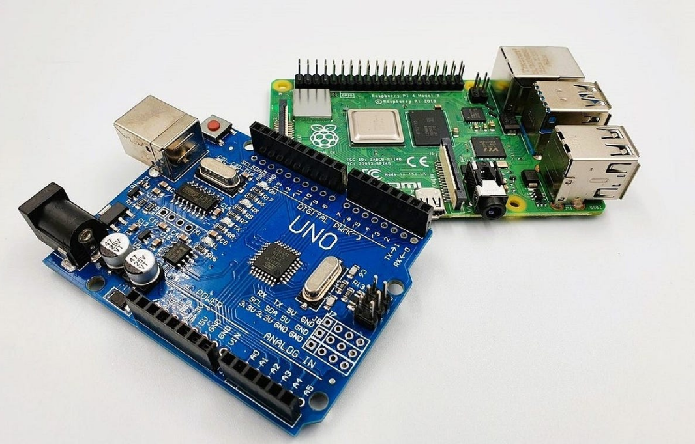

The perfect combination of real-time control and computing power for advanced IoT and automation projects.
Arduino handles real-time sensor reading and actuator control, while Pi manages web interface and connectivity.
Arduino collects precise analog readings, Pi stores data and serves web dashboard with real-time graphs.
Arduino for immediate sensor response, Pi for camera recording, notifications, and remote monitoring.
Arduino controls motors and navigation, Pi handles computer vision and remote control via web interface.
Arduino for precise servo control, Pi for object recognition and path planning with OpenCV.
Arduino handles motor control and stability, Pi streams live video and logs telemetry data.
Multiple sensor nodes with Arduino collecting data, Pi uploading to cloud and generating reports.
Arduino controls environment, Pi uses ML to optimize conditions and track plant growth.
Arduino measures current usage, Pi analyzes patterns and identifies energy-wasting devices.
Arduino collects sensor data, Pi runs ML models for predictive maintenance and optimization.
Arduino provides real-time data, Pi runs simulations to predict behavior and optimize performance.
Arduino controls experiments, Pi processes computer vision for interactive AR overlays.
Check out my public repositories for complete code and documentation of these projects.
 Visit My GitHubMany other projects are private but can be shared upon request for potential collaborations or job opportunities.
The beauty of combining Arduino and Raspberry Pi is getting the best of both worlds - real-time reliability and precise control with computational power and connectivity.
Open up possibilities that neither platform could achieve alone.